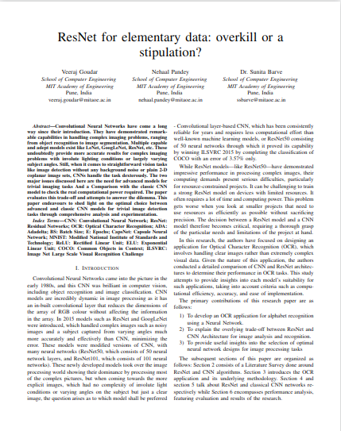
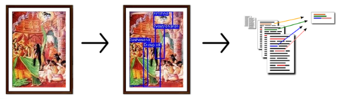
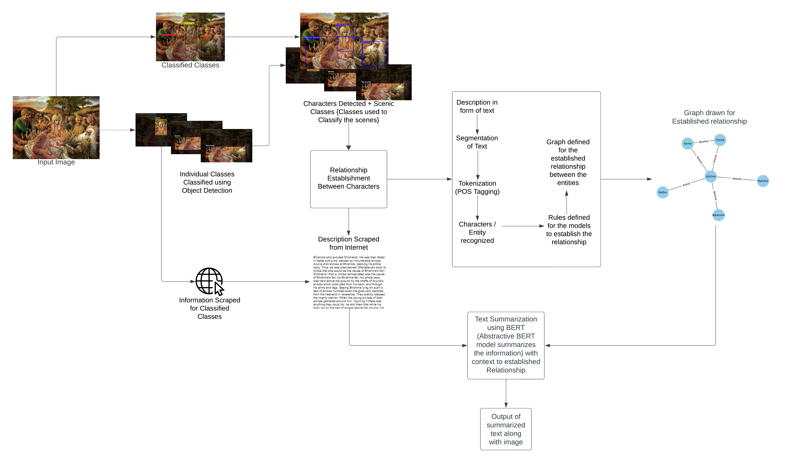
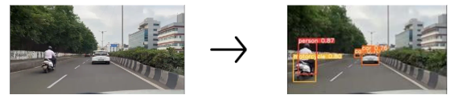
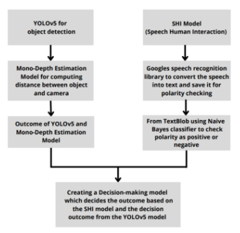
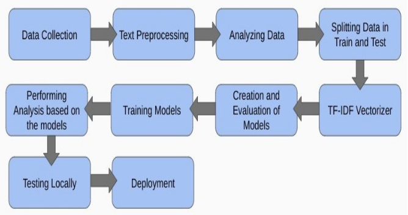
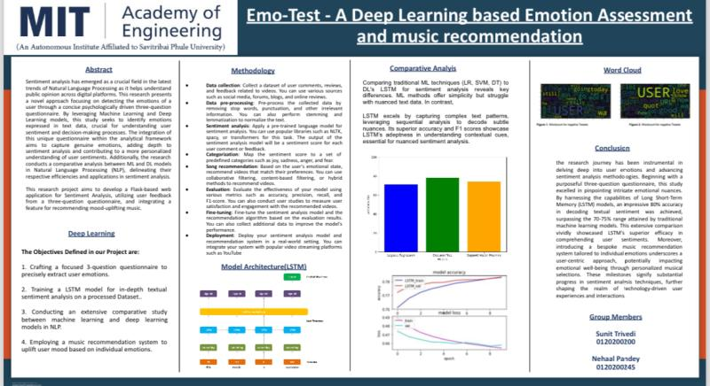
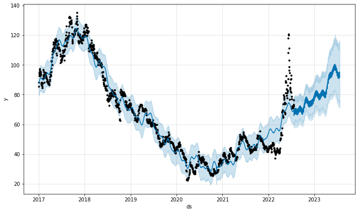

Projects
Capstone Project
Writing Intensive Capstone(survey paper)
February 2024 - April 2024
ResNet for elementary data: overkill or a stipulation?
Problem Statement: Determining the optimal choice between advanced and classic CNN models by examining the computational power required and the accuracy achieved in straightforward vision tasks devoid of background noise or coplanar image sets.
- Evaluate the performance of advanced Convolutional Neural Network models in addressing complex imaging problems with varying lighting conditions and subject angles.
- Assess the efficiency of classic Convolutional Neural Network models in handling trivial image detection tasks.
- Determine the optimal choice between advanced and classic CNN models for trivial image detection tasks by analyzing the trade-off between computational power requirements and accuracy through comprehensive experimentation and comparison.
Guide: Dr. Sunita S Barve
TY Major Project
MYTHOLOGICAL STORY TELLER
August 2022 - Dec 2023
Problem Statement: Identifying and describing mythological scenes from a given input picture to gain valuable information from the past historical scene by Automated Cognitive Information Processing.
- Creation of a dataset of mythological scenes annotating the characters and scenic classes.
- Implementation of character detection model for accurate character and scene recognition.
- Implementation of a establishing relationships between identified characters and classes (Relationship Establishment Algorithm).
- Implementation of web scraping algorithms to scrape and provide context/information regarding the scene.
- Implementation of a summarization model to summarize the scene and provide relevant information.
Guide: Dr. Sunita S Barve
SY Minor Project
Conflict Resolution for Self Driving Cars
November
2021 - May 2022Problem Statement: Developing an algorithm for conflict resolution to deal with uncertain situations arising due to conflicts between system and passenger for self driving car.
- Proposed a 3-step VUR (Visual Uncertainty Resolver) algorithm to deal with the stochastic environment in which the self-driving car operates.
- Implementation of YOLOv5 for object detection and classification, Mono-Depth Estimation, and speech synthesis to extract environmental features for identifying and resolving uncertainties.
- developed a decision-making model for self-driving cars that considers multiple parameters to calculate optimal decisions, prioritizing efficiency and effectiveness in navigation and operation.
Guide: Dr. Sunita S Barve
Open Elective Project
Emo-Test - A Deep Learning based Emotion Assessment and music recommendation
Problem Statement: To Develop a Flask-based web application for Sentiment Analysis using Long Short Term Memory(LSTM) by utilizing user feedback from a three-question questionnaire, and integrating a feature for recommending mood-uplifting music.
- Develop a web app that leverages (LSTM) networks to analyze user sentiment based on responses to a three-question questionnaire.
- Presented a comparative analysis of the sentiment analysis performance between LSTM and Logistic Regression (LR) models, highlighting their accuracy, efficiency, and applicability to the given task.
- Design and implement an intuitive interface for collecting user feedback through the questionnaire, ensuring ease of use and data quality for effective sentiment analysis..
Guide: Prof Diptee Ghusse
FY Mini Project
Predict your Portfolio’s Stock Price Action using Facebook’s Prophet
August 2022 - Dec 2023
Problem Statement: Understanding the basics of Time Series Forecasting and different approaches to time series prediction. and implementing Facebook’s Prophet Model to predict the stock price action by considering a dataset of 5 years and predicting the movement for the next year.
Click Here to Read the Article.Guide: Prof. Farhana Shaikh







